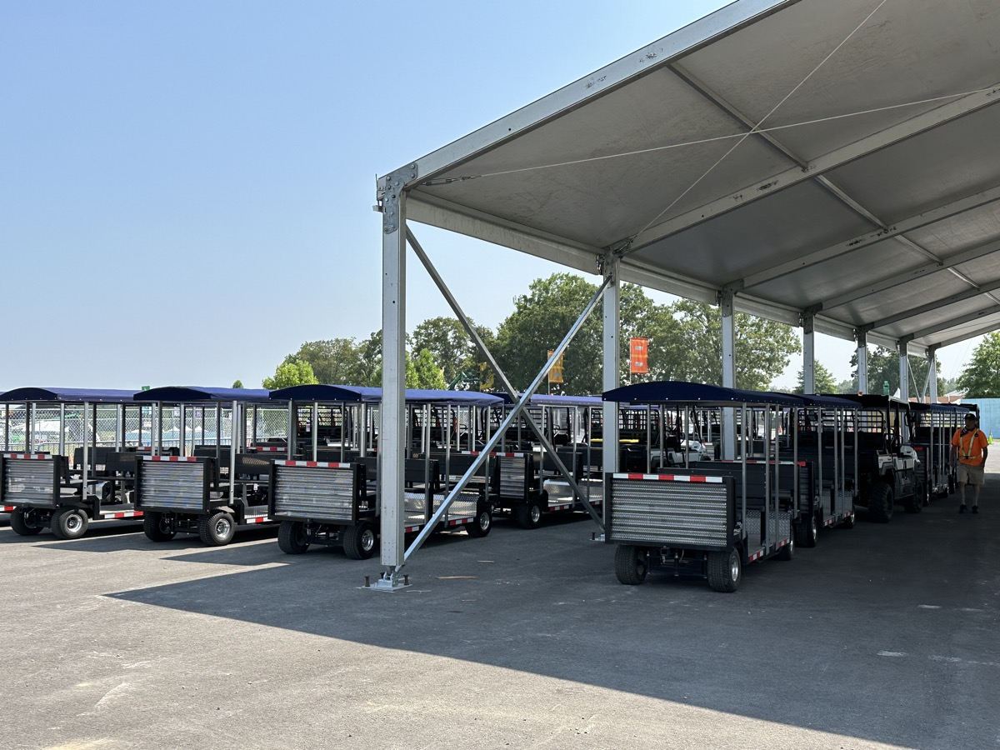

Festivals & outdoor events
Move festival crowds.
Without the golf cart chaos.
Golf carts create gridlock. Charter buses can't navigate festival grounds. FlexTram deploys a pop-up shuttle loop in hours — connecting campgrounds, remote parking, and stages with one driver and up to 27 passengers per trip.
The problem
What golf cart fleets
are really costing your event
The solution
Pop up a tram loop.
In hours, not days.
FlexTram is the festival shuttle service built for grounds that don't have roads. Deploy a complete tram loop in hours — connecting campgrounds, remote parking, stages, and vendor areas — with no permanent infrastructure required.
Where a 20-cart fleet needs 20 drivers, four FlexTrams move the same crowd with four drivers. Passengers ride a predictable loop instead of hoping a golf cart spots them. And when the festival ends? FlexTram stores compactly until the next event.
FlexTram is compact — near crowds — and ADA accessible as standard. It's the high-capacity golf cart alternative that festival operators have been asking for.
Head to head
| Metric | Charter bus | Golf cart fleet | FlexTram |
|---|---|---|---|
| Passengers per vehicle | 40+ (can't navigate grounds) | 4–6 | Up to 25 |
| Drivers for 200 pax/hr | N/A | 15–20 | 4 |
| Terrain flexibility | Paved only | Any | Any |
| Setup time | Days | Hours | Hours |
| ADA accessible | Varies | No | Standard |
| Crowd safety | Too large for grounds | Hazard in crowds | Predictable route |
What operators are saying
"We went from 30 golf carts and 30 drivers to 6 FlexTrams and 6 drivers. The grounds were safer, the crowd moved faster, and our transportation budget dropped by 40%."
— Operations director, major U.S. music festival (name withheld)
Specifications
Where we operate
Common questions
Can FlexTram replace golf carts at a music festival?
Yes. One FlexTram replaces 4-5 golf carts while carrying up to 27 passengers on a predictable loop. Most festivals reduce their cart fleet by 70% or more when switching to FlexTram.
How fast can FlexTram be deployed at a festival site?
FlexTram deploys in hours, not days. No permanent infrastructure is needed — just define your route and start running. It's purpose-built for pop-up and temporary event operations.
Can FlexTram handle unpaved festival terrain?
FlexTram is designed for the real-world conditions of festival grounds — grass, gravel, dirt paths. It handles terrain that charter buses can't navigate while carrying far more passengers than golf carts.
Is FlexTram safe to operate in crowded festival environments?
FlexTram runs a fixed, predictable route at low speed — far safer than dozens of golf carts weaving through pedestrian crowds. Fewer vehicles on grounds means fewer incidents and lower liability.
Can we rent FlexTram for a single event or weekend?
Yes. FlexTram offers rentals for single events, multi-day festivals, and seasonal operations. No long-term commitment required — scale up for your event, return when it's over.
Planning your next event? Let's talk.
Tell us about your festival — crowd size, terrain, key routes — and we'll build a custom shuttle plan that cuts your driver headcount and moves more people.
Other industries